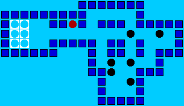

There are 379 Sokoban puzzles to be solved. Some of the puzzles are for the children, therefore, fairly easy to solve, unless you are a small child. A good number of the puzzles are quite difficult to solve. Uncle Chuck's solutions may (or may not) be the shortest. They may (or may not) be the most clever. They, for sure, solve the puzzles in a respectable, and instructive, manner.
To ensure quality solutions, Uncle Chuck has solved each puzzle no fewer than four times before releasing his solution.
The 379 Sokoban puzzles and their solutions are presented in the form of 19 interactive Java applets.

The following links are provided as a courtesy to their site owners, who have requested that their sites be listed: